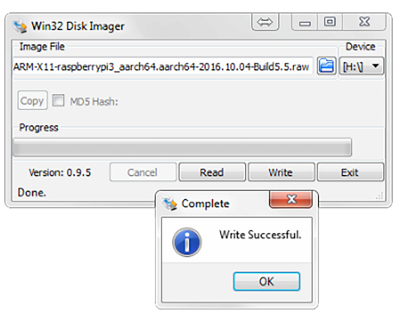
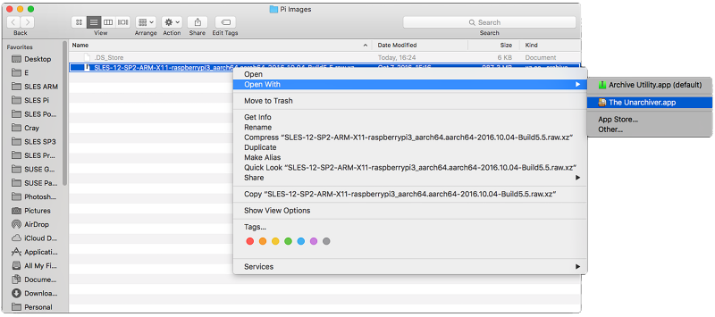

SUSE Linux Enterprise Server for Raspberry Pi is distributed as XZ-compressed image file for MicroSD cards. This section will guide you through the process of preparing the card to the first boot. If you already have a MicroSD card containing the image, you can skip this section and go straight to the section called “Booting for the First Time”.
SD Card Space Requirements
It is recommended to use a card with a capacity of at least 8 GB.
All Data on the Card will be Lost!
By following the procedure below, all data on the SD card will be overwritten and therefore irrevocably lost! Be very careful when choosing the destination device of the image writing process!
Before and after you plug in the SD card, run the lsblk command. Between the two runs of lsblk, there should be a difference of one or more lines. The first column and first row is the name of the node representing the SD card in your system. To write the image to the card, use the dd command:
xz -cdIMAGE| dd of=/dev/SDCARDDEVbs=4096
Example 1. Writing the Image to the Card using dd
This command decompresses the image
SLES-12-SP2-ARM-JeOS-raspberrypi3_aarch64-Build2.62.raw.xz to the SD
card mmcblk0.
xz -cd SLES-12-SP2-ARM-JeOS-raspberrypi3_aarch64-Build2.62.raw.xz | sudo dd of=/dev/mmcblk0 bs=4096
The following steps will guide you through the installation of the image onto the SD card on Windows. You need to meet these prerequisites:
Latest available Image of SUSE Linux Enterprise Server for the Raspberry Pi
Easy 7-Zip from http://www.e7z.org/
Win32 Disk Imager from http://sourceforge.net/projects/win32diskimager/
Open the downloaded image using Easy-7-Zip. Extract the file content into a folder with sufficient free space.

Run Win32 Disk Imager and select the extracted file as . Then, choose the correct drive letter as . Click on to start the procedure.
 Finding the correct device
If you are unsure which drive letter to choose from in the list, just remove the SD card and run Win32 Disk Imager again. The option that disappeared is the right target device.
The following steps will guide you through the installation of the image onto the SD card on macOS. You need to meet these prerequisites:
Latest available Image of SUSE Linux Enterprise Server for the Raspberry Pi
The Unarchiver from http://unarchiver.c3.cx/unarchiver
Open Finder at the location where the downloaded image is stored. Use the selection to choose The Unarchiver instead of the default Archive utility and extract the content into a folder with sufficient free space.
 Open a Terminal window and change into the destination directory of the uncompressed image. Enter diskutil list before and after the SD card is inserted to find out which device to use.
Run diskutil unmountDisk
/dev/diskX, where X is the disk number from the previous step.Run sudo dd bs=4096 if=
imageFile.rawof=/dev/diskX, where X is the disk number and imageFile.raw is the name of the uncompressed image.tux >sudo dd bs=4096 if=SLES-12-SP2-ARM-JeOS-raspberrypi3_aarch64-Build2.62.raw of=/dev/disk4 Password: 5550+0 records in 5550+0 records out 5819596800 bytes transferred in 1131.796649 secs (5141910 bytes/sec)Now unmount the disk (which is now labelled ) as usual.